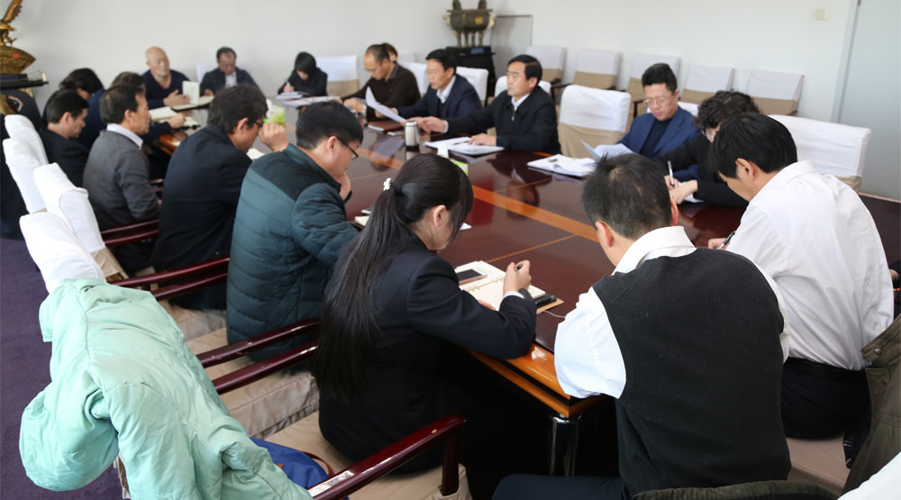

为加强商务公司党风廉政建设，切实落实好“两个责任”，进一步强化对党员领导干部的全面教育，持续改进工作作风，日前，商务公司党委对所属单位领导班子成员进行了党风廉政建设集体谈话，对认真落实中央八项规定、坚决反对四风、坚持“三重一大”制度、执行党委议事规则、落实两个责任，搞好“三严三实”活动，起到了再提醒、再警示、再教育的作用。
公司党委书记周步科分别与所属单位领导班子成员进行了党风廉政集体谈话。谈话以“勤政廉洁，勇于担当，努力践行“三严三实”为题，围绕教育活动整改措施落实情况、“三重一大”执行情况、自查自纠情况、落实“两个责任”的具体情况，对所属单位党委进行了点评，并对“三重一大”的要求进行了解读，特别对重大事项的决策、重大人事的任免、重大项目的安排、大额资金的运作等方面进行了重申。结合所属各单位的实际，就如何落实党风廉政建设“两个责任”、抓好遵章守纪和廉洁从业，做“三严三实”的忠实践行者，做好下一步工作，周书记提出了五点要求：一是要自觉遵守规章制度，把自己的行动运行在制度之下。坚持用制度管理队伍、管人管事，严守法律底线、道德底线、党纪底线，严禁有规不严、不执，筑牢思想防线，自觉接受监督，自觉遵章守纪，做政治上的明白人。二是严格权力执行度，正确使用权力。权为单位所用，人财物不要以我所用，不谋私用，不贪不占，时刻保持谦虚谨慎，始终保持敬畏之心，做有尊严的领导干部。三是严格自律，从我做起，从小事做起。领导要做榜样，不要以普通百姓标准衡量，决不能乱用权，制度执行的好坏在班子，班子的好坏在班长。作为领导班子成员，要从实际出发，既要抓好业务，又要带好队伍。四要严格执行党风廉政建设责任书内容，认真再学习一下责任书内容，对照要求切实履行一岗双责，提高对党风廉政建设重要性的认识，增强廉洁自律的紧迫感和自觉性，对照检查，整改到位，为开好民主生活会打好基础。没有达标的抓紧时间整改，认真谋划好企业的发展。
谈话结束后，所属单位领导班子成员进行了表态，表示要把周书记廉政谈话的要求，作为今后工作中严格遵守的准则，要努力践行“三严三实”，持续改进工作作风 ，在工作和生活中自律、自警、自省，做一个让公司党委放心的领导干部，做一个让职工群众衷心拥护的领导干部。